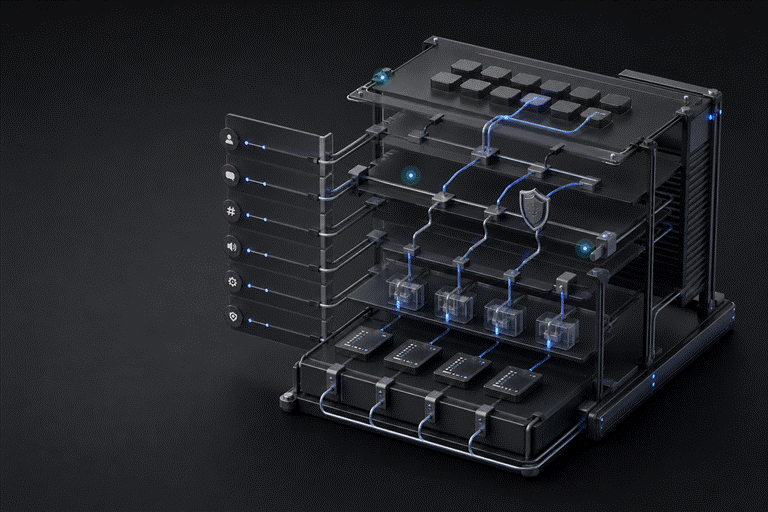
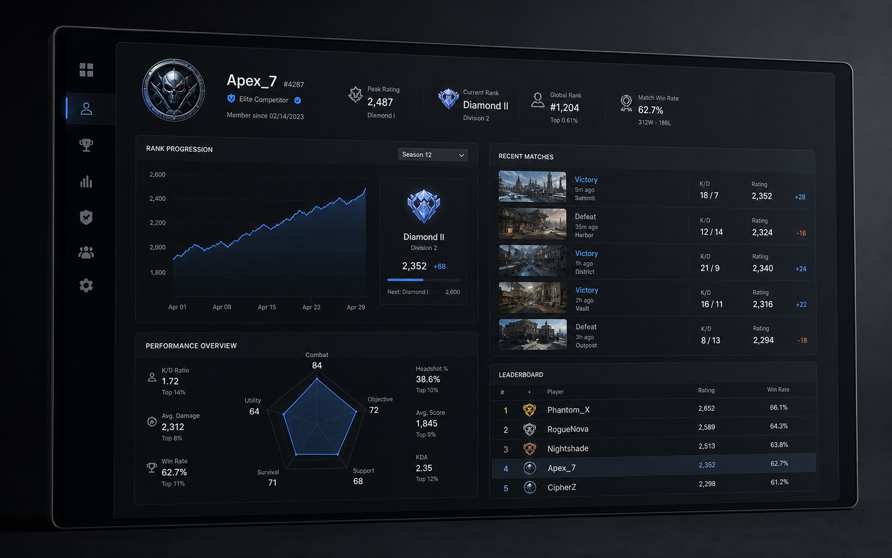
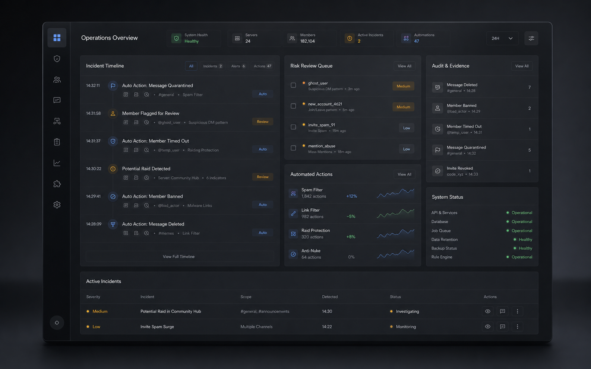
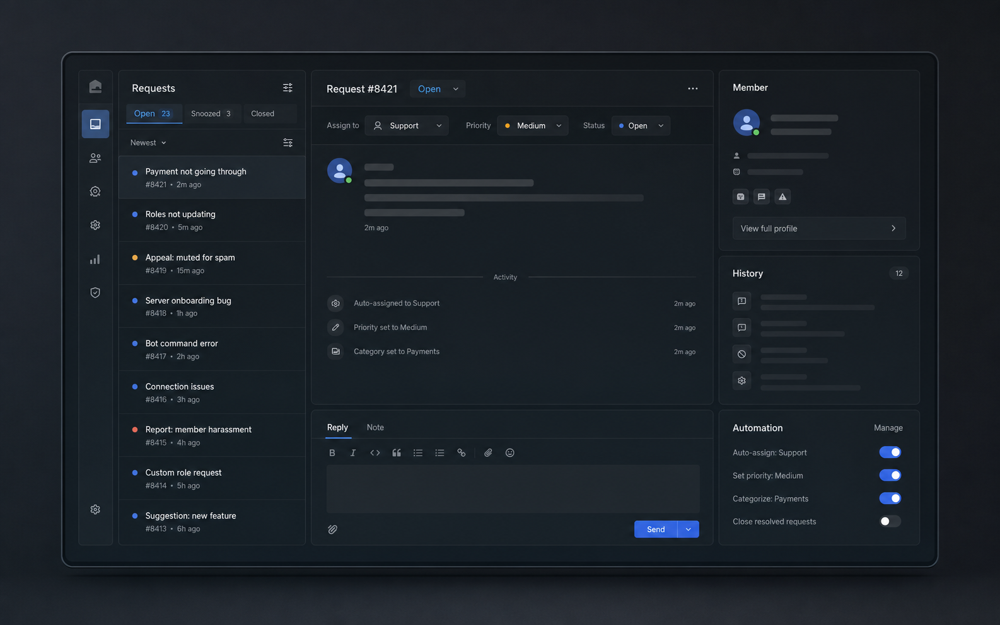

01
Purpose-built bots
Commands, permissions, databases, dashboards, and workflows designed for your actual use case.
Strategy, automation, moderation, and custom integrations designed around how your community actually operates.

One connected system, shaped around your team, permissions, member journey, and operational reality.
Commands, permissions, databases, dashboards, and workflows designed for your actual use case.
Onboarding, applications, tickets, role assignment, notifications, and repeatable staff workflows.
Anti-raid protection, evidence capture, audit logs, escalation paths, and configurable enforcement.
Bring game data, payments, websites, CRMs, creator tools, and private APIs into Discord.

Live player data, match history, leaderboards, and role automation in one connected system.

Automated detection, review queues, enforcement, and evidence designed for consistent staff decisions.

Request intake, routing, member context, and automated actions built into one clear workspace.
You work with the developer building the system. No account-manager relay and no outsourced handoffs.
Start a projectWe identify the real workflow, permissions, edge cases, and success criteria.
You review a clear feature scope, architecture, delivery plan, and fixed quote.
We develop and validate the system against realistic server behavior and staff roles.
You receive deployment guidance, source code, documentation, and post-launch support.
Every build begins with a free Discord consultation. Final pricing reflects your features, integrations, and delivery requirements.
For established communities that need a complete multi-feature system.
A focused bot with one or two custom features and fast delivery.
Start a projectComplex platforms, dashboards, integrations, and multi-server operations.
Start a projectDelivered exactly what I described, ahead of schedule. The system works flawlessly and the code is clean enough to maintain.Jake M. Gaming community
Fast, communicative, and dependable. The bot has been running for months without an issue.
Our tournament workflow now runs from registration through standings without staff chasing spreadsheets.
Starter builds usually take 3-5 days, Pro systems 7-14 days, and Enterprise work 2-4 weeks. Your quote includes a delivery estimate.
Yes. You receive the complete source code on delivery with no licensing keys or forced ongoing dependency.
Yes. The maintenance retainer can include hosting, monitoring, bug fixes, and minor updates. Self-hosting guidance is also available.
Describe your server and the operational problem. We will help define a practical feature scope around your goals and budget.
Share the workflow, problem, or idea. We will turn it into a clear technical scope.